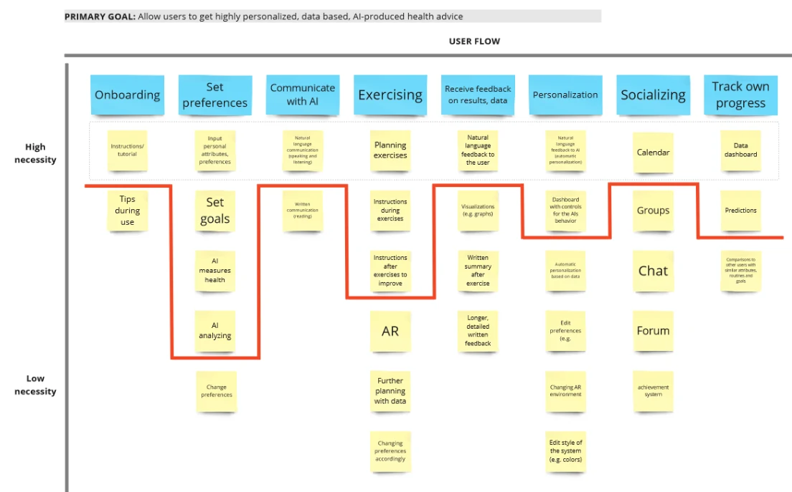

UX RESEARCHER & DESIGNER · TAMPERE, FINLAND
Understanding people. Designing better experiences.
Hi, I’m Santeri Keskinen. I’m passionate about understanding people and their needs, and using research and human-centered design to create intuitive, accessible and ethical digital experiences that make everyday life easier.
Open to new opportunities

01 / SELECTED WORK
From questions to solutions.
Three projects that show how I turn research into practical design decisions.

Product design · 2023
Polar Electro
Making AI-powered wellbeing approachable
From four interviews to a validated wearable and AR concept for people who want to build healthier habits.
Read case study
UX research & redesign · 2023
LibreOffice
Making complex settings easier to navigate
A research-driven redesign that balances novice users’ needs with the flexibility of an advanced settings interface.
Read case studyUsability research · 2022
TOAS
Reducing friction in student housing applications
Heuristic evaluation and think-aloud testing revealed 30 usability issues and informed actionable recommendations.
Read case study02 / MY APPROACH
Understanding comes before designing.
What inspires me about technology is its potential to make people's everyday lives easier. Rather than focusing on how technology is built, I am more interested in understanding how people interact with it, what challenges they encounter and how thoughtful design can make a difference.
Through research, evaluation and human-centered design, I aim to create digital experiences that are intuitive, accessible and meaningful. My focus is not only on whether technology works, but also on how well it serves the people who use it.
More about my journey →Listen & understand
Interviews, user research and data analysis.
Evaluate & learn
Usability testing, heuristic evaluation and accessibility.
Design with purpose
Prototyping, human-centered and ethical design.
03 / RESEARCH IN PRACTICE
Beyond the interface.
As a research assistant in GameIN at Tampere University, I have worked with research data and helped organise field tests, workshops and a competition in a multinational project. My academic work also explores dark patterns and the recognition of misinformation.
Explore GameIN →LET’S CONNECT
Have a challenge worth understanding?
I’m interested in opportunities where research and thoughtful design can make a difference.
Get in touch →